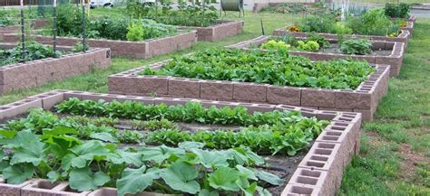

About Us
We are a worker-owned coop, dedicated to serving high-quality vegan food produced by local sources, located in Queen Anne, Seattle.
We believe that urban agriculture is incredibly important. Locally grown food reduces carbon dioxide in the air, and saves energy that would be consumed in transportation. Additionally, community gardens give people more power to feed themselves in a healthy way. Because of this, we grow much of our own food (seasonal fruits and vegetables, as well as chestnuts), and find what we can't grow from local sources. Additionally, we donate all of our profits to local initiatives that build community gardens.
To avoid waste, we distribute all unused food at the end of the day to unhoused people living nearby.